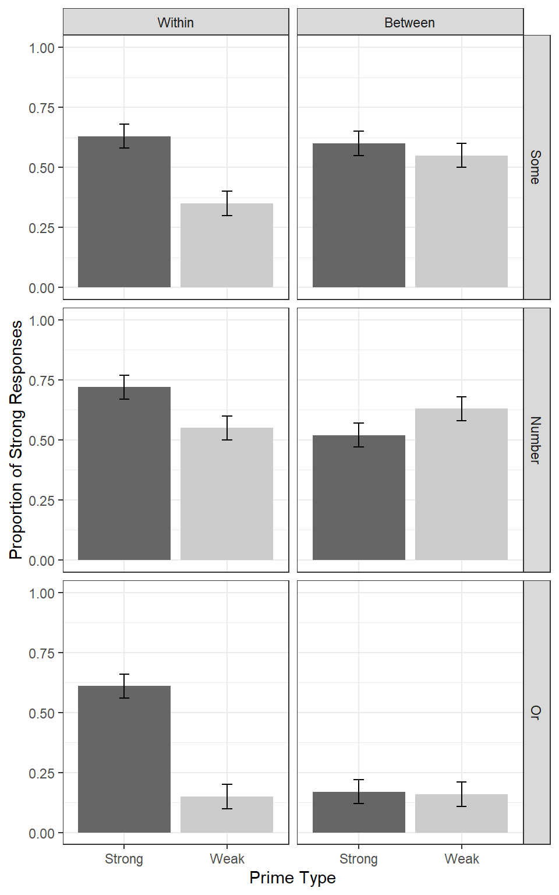

Table of Contents
This is the first installment of plot makeover where I take a plot in the wild and make very opinionated modifications to it.
Before
Our plot-in-the-wild comes from the recent AMLAP 2020 conference, where I presented my thesis research and had the opportunity to talk with and listen to expert psycholinguists around the world. The plot that I’ll be looking at here is Figure 3 from the abstract of a work by E. Matthew Husband and Nikole Patson.

Figure 1: Plot from Husband and Patson (2020)
What we have is a a grid of 12 bar plots with error bars, grouped at three levels and mapped in the following way:
First level is mapped to row grid.
Second level is mapped to row column.
Third level is mapped to x-axis.
To get a better sense of what they did, and to make data for my new plot, I have recreated the original plot below:
1. Data
library(tidyverse)
df <- crossing(level_1 = fct_inorder(c("Within", "Between")),
level_2 = fct_inorder(c("Some", "Number", "Or")),
level_3 = factor(c("Strong", "Weak")))
df$barheight <- c(.63, .35, .72, .55, .61, .15, .60, .55, .52, .63, .17, .16)
df
# A tibble: 12 x 4
level_1 level_2 level_3 barheight
<fct> <fct> <fct> <dbl>
1 Within Some Strong 0.63
2 Within Some Weak 0.35
3 Within Number Strong 0.72
4 Within Number Weak 0.55
5 Within Or Strong 0.61
6 Within Or Weak 0.15
7 Between Some Strong 0.6
8 Between Some Weak 0.55
9 Between Number Strong 0.52
10 Between Number Weak 0.63
11 Between Or Strong 0.17
12 Between Or Weak 0.162. Plot
df %>%
ggplot(aes(level_3, barheight)) +
geom_col(
aes(fill = level_3),
show.legend = FALSE
) +
geom_errorbar(
aes(ymin = barheight - .05, ymax = barheight + .05),
width = .1) +
facet_grid(level_2 ~ level_1) +
theme_bw() +
scale_fill_manual(values = c('grey30', 'grey70')) +
ylim(0, 1) +
labs(
y = "Proportion of Strong Responses",
x = "Prime Type") +
theme_bw()
My Plan
Major Changes:
Flatten the grid in some way so that everything is laid out left-to-right and you can make comparisons horizontally.
Cap the y axis to make it clear that the values (proportions) can only lie between 0 and 1.
Make strip (facet) labels larger and more readable.
Minor Changes
Remove grid lines
Remove boxes around strip labels
Increase space between axis and axis titles.
Minimize the ink that the bars are taking up (possibly by removing bars entirely).
Increase letter spacing (probably by changing font)
After
I actually couldn’t settle on one final product1, so here are two plots that incorporate the changed that I wanted to make.
The first is a point-line plot:
dodge <- position_dodge(width = .5)
df %>%
mutate(level_3 = as.numeric(level_3)) %>%
ggplot(aes(x = level_3, y = barheight, group = level_1)) +
geom_point(position = dodge) +
geom_errorbar(
aes(ymin = barheight - .05, ymax = barheight + .05),
width = .2,
position = dodge
) +
geom_line(
aes(linetype = level_1),
position = dodge
) +
facet_wrap(~ level_2) +
scale_x_continuous(
breaks = 1:2,
labels = levels(df$level_3),
expand = expansion(.2),
) +
ylim(0, 1) +
lemon::coord_capped_cart(left = "both") +
guides(linetype = guide_legend(direction = "horizontal",
title.position = 'top',
title.hjust = .5,
title.theme = element_text(size = 10, face = "plain"),
label.theme = element_text(size = 8))
) +
labs(
y = "Strong Responses",
x = "Prime Type",
linetype = "Category"
) +
ggthemes::theme_clean(
base_size = 12,
base_family = "Futura"
) +
theme(
text = element_text(family = "Montserrat"),
legend.position = c(.17, .85),
legend.background = element_rect(color = 'black', size = unit(.5, 'mm')),
strip.text = element_text(size = 13),
plot.margin = margin(.5, .5, .5, .5, 'cm'),
axis.title.x = element_text(vjust = -3),
axis.title.y = element_text(vjust = 5),
plot.background = element_blank(),
panel.grid.major.y = element_blank()
)
The second is a good ol’ bar plot:
dodge <- position_dodge(width = .5)
df %>%
mutate(level_3 = as.numeric(level_3)) %>%
ggplot(aes(x = level_3, y = barheight, group = level_1)) +
geom_col(position = dodge, width = .5, color = 'white', aes(fill = level_1)) +
scale_fill_manual(values = c("grey30", "grey60")) +
geom_errorbar(
aes(ymin = barheight - .05, ymax = barheight + .05),
width = .2,
position = dodge
) +
facet_wrap(~ level_2) +
scale_x_continuous(
breaks = 1:2,
labels = levels(df$level_3),
expand = expansion(.2),
) +
ylim(0, 1) +
lemon::coord_capped_cart(left = "both") +
guides(fill = guide_legend(direction = "horizontal",
title = NULL,
keywidth = 1, keyheight = 1,
title.theme = element_text(size = 10, face = "plain"),
label.theme = element_text(size = 8))
) +
labs(
y = "Strong Responses",
x = "Prime Type"
) +
ggthemes::theme_clean(
base_size = 12,
base_family = "Futura"
) +
theme(
text = element_text(family = "Montserrat"),
legend.position = c(.17, .85),
legend.background = element_blank(),
strip.text = element_text(size = 13),
plot.margin = margin(.5, .5, .5, .5, 'cm'),
axis.ticks.x = element_blank(),
axis.title.x = element_text(vjust = -3),
axis.title.y = element_text(vjust = 5),
plot.background = element_blank(),
panel.grid.major.y = element_blank()
)Session Info
R version 4.0.2 (2020-06-22)
Platform: x86_64-w64-mingw32/x64 (64-bit)
Running under: Windows 10 x64 (build 18363)
Matrix products: default
locale:
[1] LC_COLLATE=English_United States.1252
[2] LC_CTYPE=English_United States.1252
[3] LC_MONETARY=English_United States.1252
[4] LC_NUMERIC=C
[5] LC_TIME=English_United States.1252
attached base packages:
[1] stats graphics grDevices utils datasets methods base
other attached packages:
[1] forcats_0.5.0 stringr_1.4.0 dplyr_1.0.2 purrr_0.3.4
[5] readr_1.3.1 tidyr_1.1.1 tibble_3.0.3 ggplot2_3.3.2
[9] tidyverse_1.3.0 extrafont_0.17
loaded via a namespace (and not attached):
[1] Rcpp_1.0.5 lattice_0.20-41 lubridate_1.7.9 png_0.1-7
[5] assertthat_0.2.1 digest_0.6.25 utf8_1.1.4 plyr_1.8.6
[9] R6_2.4.1 cellranger_1.1.0 backports_1.1.7 reprex_0.3.0
[13] evaluate_0.14 httr_1.4.2 highr_0.8 pillar_1.4.4
[17] rlang_0.4.7 readxl_1.3.1 rstudioapi_0.11 extrafontdb_1.0
[21] blob_1.2.1 rmarkdown_2.3 labeling_0.3 munsell_0.5.0
[25] broom_0.7.0 compiler_4.0.2 modelr_0.1.8 xfun_0.15
[29] pkgconfig_2.0.3 lemon_0.4.5 htmltools_0.5.0 tidyselect_1.1.0
[33] gridExtra_2.3 fansi_0.4.1 crayon_1.3.4 dbplyr_1.4.4
[37] withr_2.2.0 grid_4.0.2 jsonlite_1.7.0 Rttf2pt1_1.3.8
[41] gtable_0.3.0 lifecycle_0.2.0 DBI_1.1.0 magrittr_1.5
[45] scales_1.1.1 cli_2.0.2 stringi_1.4.6 farver_2.0.3
[49] ggthemes_4.2.0 fs_1.4.1 xml2_1.3.2 ellipsis_0.3.1
[53] fortunes_1.5-4 generics_0.0.2 vctrs_0.3.2 distill_0.8
[57] tools_4.0.2 glue_1.4.1 hms_0.5.3 yaml_2.2.1
[61] colorspace_1.4-1 rvest_0.3.6 knitr_1.29 haven_2.3.1I ran the first plot by a friend who has a degree in design, and she recommended several changed that eventually ended up being the second plot↩︎